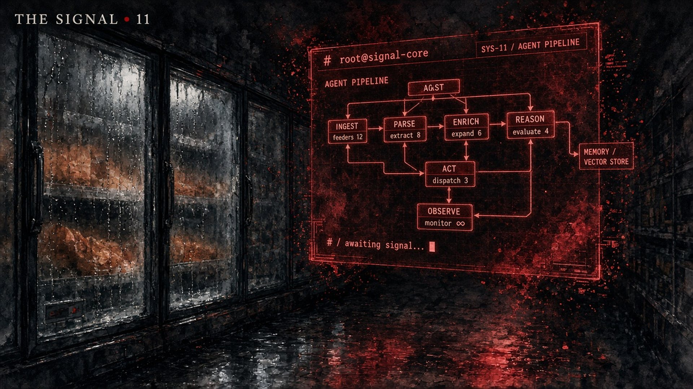
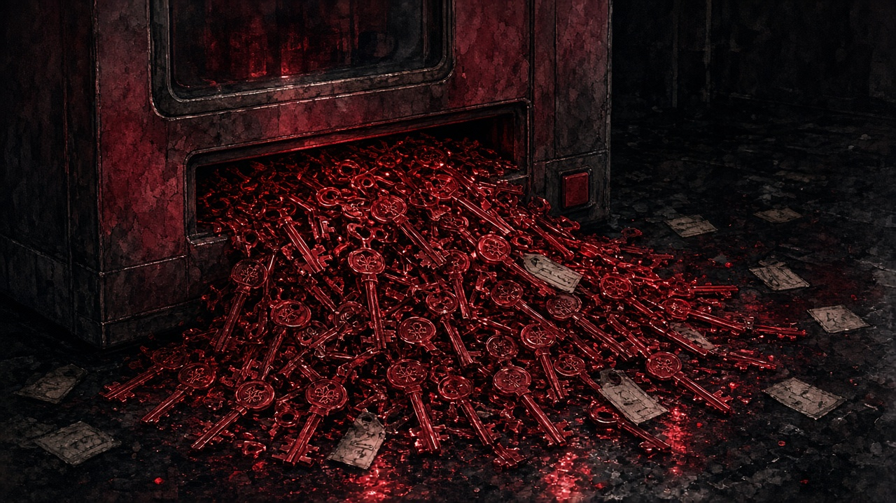

The Signal · Issue 11 · November 5, 2026
The Price of Root
The exploitation window just got a price tag. And the same story is already melting the frozen aisle.
On Wednesday OpenAI published "A thousand fewer paths to root." It's a pipeline built around an upcoming cyber model. Agents pick targets in the Linux kernel, scan for bugs, rebuild each one in a sealed VM, try to turn it into an exploit, write a patch, and hand the whole bundle to a human researcher. (VERIFIED, OpenAI)
The numbers from one mid-October run, in OpenAI's words: "Our prototype identified and analyzed 2,308 candidate Linux kernel findings, dynamically reproduced 1,724 vulnerabilities, and produced 948 local privilege escalation (LPE) exploits that could allow an unprivileged local user to gain root access." The target was a stock desktop distro, not a weakened box. (VERIFIED)
Then the line that matters: "The total run cost $1,213,430 in API credits, or $1,279 per LPE exploit." (VERIFIED) OpenAI also says the agents found and used at least 10 new Linux exploitation techniques. (VERIFIED, their claim)
Sit with that $1,279 for a second. OpenAI points out that old Pwn2Own and TyphoonPWN bounties of $20,000 and $70,000 for a Linux kernel LPE would value the haul at $18.9M to $66.3M, roughly 16x to 55x what the run cost. (VERIFIED, OpenAI's own math) Root used to be a craft. Now it's a line item.
Read it carefully though. 948 is the count of distinct bugs that got candidate patches and went to human review. It is not 948 fixes already running on your laptop. (VERIFIED framing; how many reached users is UNMEASURED.) The bottleneck moved from finding bugs to shipping fixes.
OpenAI says it plainly: "having access to a low-privileged account on an operating system that isn't up-to-date on its latest available patches should be considered functionally equivalent to root access for a well-resourced threat actor." (VERIFIED, quoted via The Hacker News)
The UK's NCSC landed in the same place this week: "The widespread availability of AI-powered cyber tools has almost certainly led to a significant increase in the discovery of zero-day vulnerabilities." It adds that attackers now show "less caution over losing an access ... as the cost to replace is minimal." (VERIFIED, NCSC assessment PDF)

Now step out of the kernel and into a grocery store.
On Monday, Reuters reports, stores in eight European countries threw out food after someone cranked their fridge and freezer temperatures, "in an attack identical to one that swept dozens of supermarkets in France three weeks ago." (VERIFIED, Reuters via Investing.com; other outlets count up to 10 countries.) Danfoss, whose controllers were targeted again, told customers the systems "should not be directly accessible via the internet." Swedish Coop's seven hit stores are back up with refrigeration cut off from the internet, and it's moving from 4G links to 5G and newer modems. ICA said all 23 of its hit stores had gear outside its centrally managed network. (VERIFIED)
In France, Danfoss said many units ran "outdated firmware" or had reached end of life with no more updates. Some got hot enough to catch fire. (VERIFIED, Reuters/CBC)
And in late August, at least six US military commissaries lost their freezers. At Fort Huachuca, the base posted that the freezer "went into defrost mode where it heated up all the food." The Pentagon is treating it as a suspected hack, four officials told Reuters. Cyber Command is involved. Nobody has named a cause or a culprit. (VERIFIED that it's under investigation; the cause is UNVERIFIED.)
Here's my read (thesis, not fact): it's one story. A $1,279 kernel root and a forgotten fridge controller on a 4G modem are the same thing. Old code, still reachable, that nobody owns. AI is making the door much cheaper to find, for defenders and attackers alike. $1,279 isn't free, but it's far below what this work used to cost. The winners won't be whoever finds the most bugs. They'll be whoever closes doors fastest. I'm e/acc on this. The same pipeline that writes 948 exploits writes 948 patches. But only if someone actually ships them.
Sovereign move for the next 24 hours: list every device you own that can reach the internet. Router, cameras, the smart plug, the NAS, the TV. For each one, check whether it still gets updates. Anything that doesn't gets unplugged or put on its own network tonight. Then turn on auto-updates on your laptop and phone and restart them. OpenAI's warning is about well-resourced attackers, not every kid with a laptop. Still, an unpatched machine is the easy target.
From the desk: get The Signal free
If someone forwarded you this, get the next one in your inbox. One email a week. Free.
→ https://dylan2045ad.github.io/dylan2045-ad/newsletter/
(Want more? Full Transmission is the members' edition, one extra section every week: https://payhip.com/b/vcXbV. The $1 tools are still in the shop. And if you want the bigger decision system behind how I read weeks like this, that's the Field Kit: https://payhip.com/b/V472q.)
— Dylan